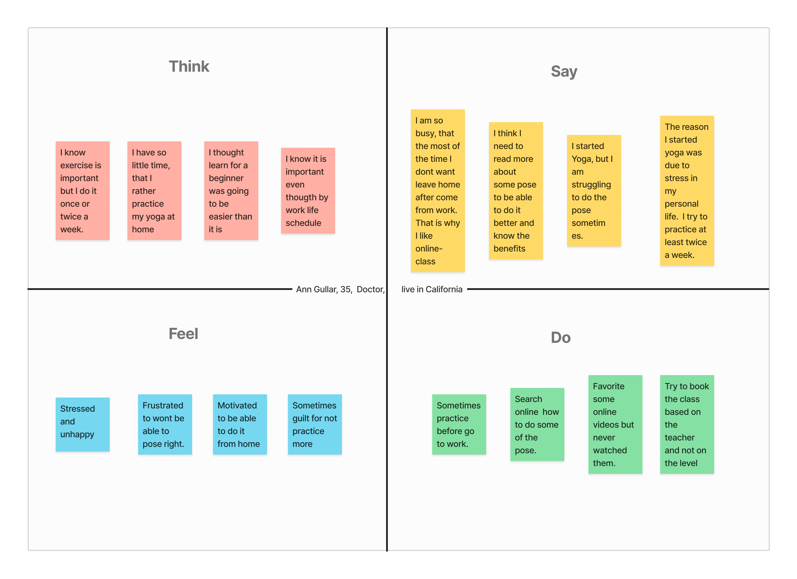

Research
To understnd the needs and goals of my target users, I conducted user research using a combination of methods such as interviews, competitive analysis
User interview
I conduct an online and in person interview, to understand how the users feels, needs and their motivations. I wanted to get more insights into their frustations, goals and what need to happen to improve the app
I interviewed 5 individuals, age 21 - 50, who have a busy scheudle life, begginers and aware of the beneficts of yoga.
Empathy Map

The empathy map allowed me to identify the user pain points
- User want to be able to choose the teacher
- Users are experience a lack of information on postures
- User want a plataform to learn from home
- Users are experience a lack of guidance to choose the class